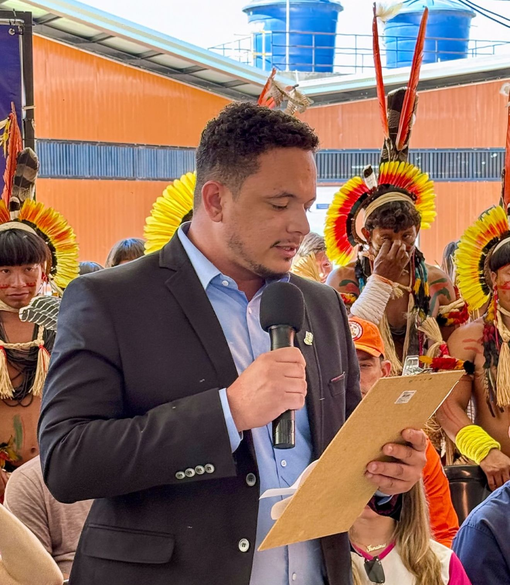
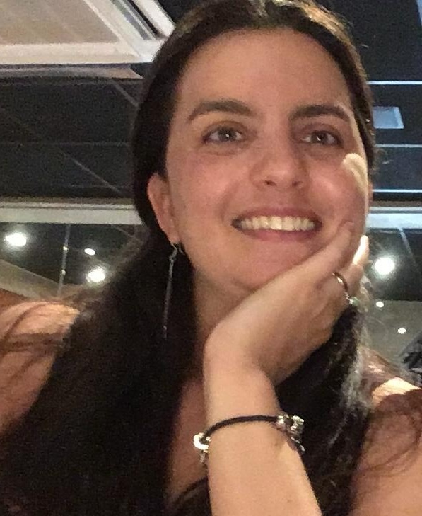
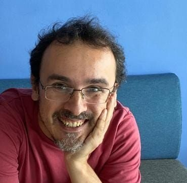

Team
A multidisciplinary team united by commitment to language revitalization and respect for Indigenous communities.
-

Fabrício Ferraz Gerardi
Computational Linguistics
PhD in Linguistics, master's in Computational Linguistics, specialist in language structure. Researches documentation and revitalization of Indigenous languages, working in Mato Grosso and partnerships with schools and universities.
-

Gustavo Polleti
Engineering and Coordination
Engineer with experience in machine learning and technology infrastructure. Over 6 years as a machine learning engineer at companies such as Nubank and Wildlife Studios. Technical lead of the project.
-

Michel Correa da Silva
Indigenous School Director
Public servant of the State of Mato Grosso for nine years, with a full degree in Mathematics and specialization in Natural Sciences and Mathematics at IFMT. Since 2025, he has been Director of the Enawenê-Nawê State Indigenous School.
-

Maria Eduarda Correr (Duda)
Pedagogy
Graduated in Letters - Portuguese and Spanish (BA and teaching degree) from USP. Specialization in Neuroscience and Learning from USP (PECEGE-USP). Researches teaching methodologies and practices with neuroscientific foundations.
-

José Ícaro Bezerra Clemente
AI and ML Engineering
AI solutions architect, specialist in prompt engineering. Specialist in language models, RAG, and semantic infrastructure.
-

Fernando Orphão de Carvalho
Linguistics/Anthropology
Professor in the Linguistics Section of the Anthropology Department at the National Museum of UFRJ. Specialist in historical-comparative linguistics of the Tupi-Guarani, Arawak, and Carib families of South America.
-

Carolina Aragon
Anthropological Linguistics
MA from the University of Brasilia and PhD in Linguistics from the University of Hawai'i. Professor at the Department of Portuguese Language and Linguistics at UFPB. Linguistic and ethnographic research with lowland Amazon peoples.
-

Tiago Tresoldi
Computational Historical Linguistics/Data Analysis
Graduated in Languages from the Federal University of Rio Grande (FURG) and the University of Pisa (UniPi), master's and doctorate in Languages from the Federal University of Rio Grande (FURG). Affiliated researcher at the Department of Linguistics and Philology at Uppsala University (Sweden).


Join us
We are always looking for collaborators committed to the revitalization of Indigenous languages. Get in touch.